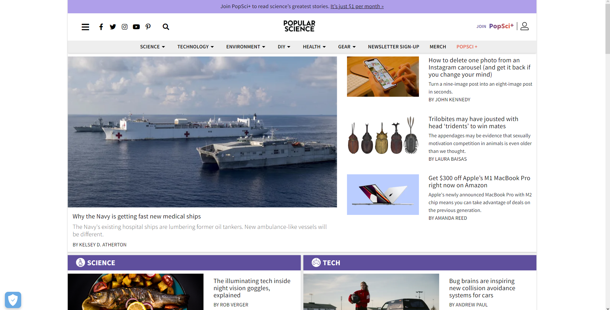

Question 1: Using 3 different networks (university, home, and 5G)
a. Measure the speed of each network using this tool
and take a snapshot of each one, include them in the answer level in the HTML file and caption them.
Figure 1: Home Network
Figure 2: UWindsor (eduroam) Network
Figure 3: 5G Koodo Cellular

b. What is the minimum internet speed (connection speed) you may consider as a web designer and why?
In my opinion having at least 10Mbps download and upload speeds would be fairly respectable for web designing. For such an activity, you don't really need
super high upload and download speeds. As a baseline result for web development, if you can load and reload websites within one second then your network speed
is sufficient enough for web designing. The reason behind having this baseline result is so that as a web designer you will be able to make edits to the website,
and see the result of your changes in a timely manner, otherwise it may be taxing to make modifications to the website if you take too long to load into it.
Question 2: Choose a website you like that has a responsive design
a. Take 3 snapshots of the website using 3 different types of devices (laptop, wide-screen desktop, smartphone, tablet, etc..).
Snapshot 1: Desktop

Snapshot 2: iPhone 11 Smartphone
Snapshot 3: Microsoft Surface Laptop
b. Resolution type of each device
Desktop: 1920x1080
Smartphone: 1792x828
Laptop: 2736x1824
c. Does the website have accessibility features? give an example from the website. To
check that you may right click on the main page, select view source or page source
(depends on the browser), find alt attribute in img tag? is there any actual text
not only alt=""?
The Popular Science website does indeed contain accessibility features. Browsing through the source HTML code
I found multiple alt="" elements in img tags. Additionally, the website declares the HTML language type and there
are several declarations of headers numbered from one through six following the requirements for clear HTML language
formatting. Furthermore, semantic HTML coding is noticed throughout the website (i.e. whenever a button must be present
it is encapsulated as "button" and not as a standard div class).
Which kind of viewing pattern does it have?
The viewing pattern for this website appears to be a "Layer-Cake" viewing pattern. That is, the website is layed out in a way
to provide multiple headings for various topics. The viewer will scan through the headings and examine a topic that catches their
attention. This pattern is mostly used for websites that provide news and important articles on various topics and aren't limited to
one subject of interest.
Does it have active white space or passive white space/both/none of them? Example with screenshot is required.
The website has both passive and active white space. The active whitespace is used to bring attention the the photos that are used
in this website. The passive whitespace is being used to displace the various topics found on the website. This is due to the fact that
the website is used as a source of information for various scientific fields, thus they require some sort of separation due to the varying
topics.
Figure 4: Active Whitespace in Effect
Figure 5: Passive Whitespace in Effect